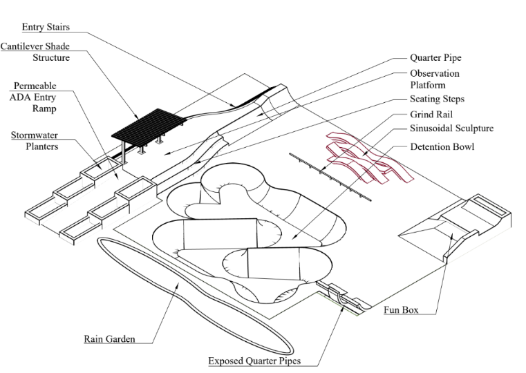

Find your line
A mix of ramps, rails, transitions, and forms gives skaters different ways to move through the space.
A visual introduction to the skate park concept for Brown Memorial in Chicago’s Chatham neighborhood—where skating, community space, accessibility, and water-conscious landscape meet.

The drawing brings active recreation together with comfort, access, and a landscape that has a role in how the site handles rain.
The concept pairs the energy of a skate park with the everyday needs of a neighborhood gathering place. Its paths, edges, and places to pause matter just as much as the riding surfaces.
A mix of ramps, rails, transitions, and forms gives skaters different ways to move through the space.
Shade, seating, and an observation area create room for friends, families, and neighbors to spend time here.
Rain gardens, planters, and a detention bowl are part of the design shown—not added as an afterthought.
Use this simple walkthrough to read how the elements in the drawing relate to one another.
The drawing shows stairs and a permeable accessible ramp leading into the park. A welcoming route sets the tone before anyone reaches the skating area.
A cantilevered canopy marks a sheltered gathering point, with observation space and seating steps giving people a place to watch and catch their breath.
The plan labels quarter pipes, a grind rail, a fun box, and exposed quarter pipes around a flowing central arrangement of skate forms.
Rain garden, stormwater planter, and detention bowl labels point to a landscape approach that pairs recreation with water management.